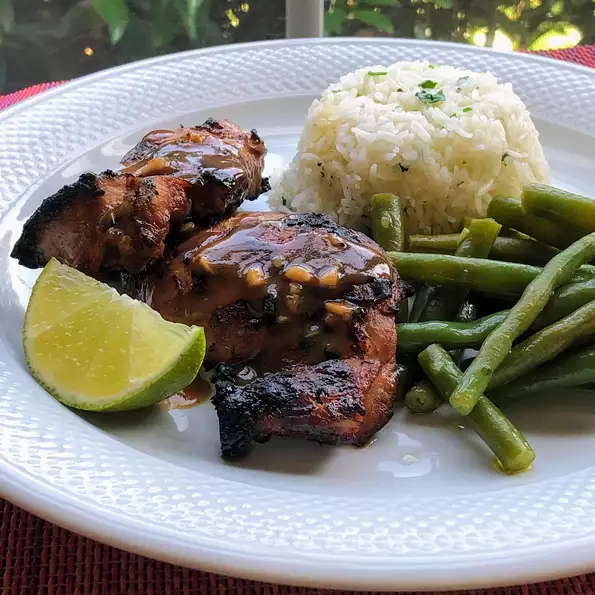

Grilled Chicken Thighs

Description
If you're a grilled chicken thigh and Asian food fan, you're in for a treat.
This marinade has the perfect combination of savory-sweet-spicy-salty,
and these juicy thighs will make your entire family happy.
Serving suggestions would be jasmine rice, grilled or stir-fried veggies, or a chilled cucumber salad.
Garnish with chopped cilantro and serve with lime wedges on the side.
Ingredients
- 1/4 cup soy sauce
- 1/4 cup fish sauce
- 3 tablespoons brown sugar
- 2 tablespoons chopped cilantro
- 1 tablespoon sesame oil
- 1 tablespoon minced fresh ginger root
- 1 tablespoon Sriracha sauce
- 1 tablespoon minced garlic
- 1 tablespoon lime juice
- 1 teaspoon lemongrass paste (such as Gourmet Garden®)
- 2 pounds boneless, skinless chicken thighs
Steps
- Whisk soy sauce, fish sauce, brown sugar, cilantro, sesame oil, ginger, Sriracha, garlic, lime juice, and lemongrass paste together in a bowl.
- Put chicken thighs in a resealable plastic bag, pour marinade over chicken, and marinate for 2 hours or overnight for an even better flavor.
- Preheat the grill to medium-high heat and oil the grate.
- Remove chicken thighs from marinade, discarding marinade.
- Grill chicken thighs until they are no longer pink in the center and the juices run clear, about 3 minutes per side. An instant-read thermometer inserted into the center should read at least 165 degrees F (74 degrees C).
- Remove from grill and allow to rest for a few minutes before serving.